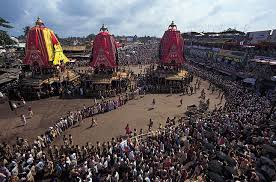

Nestled on the eastern coast of India, Odisha is a state renowned for its rich cultural heritage, diverse landscapes, and ancient temples. Here's a glimpse into what makes Odisha a captivating destination:
Odisha is home to some of the most exquisite temples in India, showcasing stunning architecture and intricate carvings. Explore the iconic Sun Temple at Konark, a UNESCO World Heritage Site known for its mesmerizing sculptural details and architectural grandeur.
Marvel at the towering spires of the Jagannath Temple in Puri, one of the Char Dham pilgrimage sites, and witness the sacred rituals and vibrant festivities that take place throughout the year.
With a coastline stretching over 480 kilometers along the Bay of Bengal, Odisha boasts pristine beaches and serene coastal landscapes. Relax on the golden sands of Puri Beach, famous for its annual Rath Yatra festival and vibrant beach culture.
Explore hidden gems like Chandrabhaga Beach and Gopalpur-on-Sea, where you can indulge in water sports, witness stunning sunsets, and experience the laid-back charm of coastal life.
Immerse yourself in the vibrant cultural heritage of Odisha, where ancient traditions thrive alongside modern influences. Experience the colorful festivals of the state, including the Ratha Yatra in Puri, the Konark Dance Festival, and the famous Durga Puja celebrations.
Witness traditional art forms such as Odissi dance, Pattachitra painting, and appliqué work, which reflect the artistic prowess and cultural richness of the region.
Odisha is blessed with diverse landscapes, including lush forests, meandering rivers, and rolling hills. Explore the verdant beauty of places like Simlipal National Park, home to a variety of wildlife species including tigers, elephants, and leopards.
Discover the tranquil waterfalls of Odisha, such as the majestic Duduma Waterfall and the picturesque Badaghagra Waterfall, where you can rejuvenate amidst the soothing sounds of cascading water.
Odisha is renowned for its exquisite handicrafts, including intricate silver filigree work, vibrant textiles, and finely crafted stone sculptures. Explore local markets and artisan villages to admire and purchase authentic Odishan handicrafts, perfect as souvenirs or gifts.
Indulge in the delectable cuisine of Odisha, known for its rich flavors and diverse culinary traditions. Don't miss out on local delicacies like the famous Pahala Rasagola, Chhena Poda, and mouthwatering seafood dishes that reflect the coastal influence.
Whether you're drawn to the ancient temples, serene beaches, cultural festivals, or natural landscapes, Odisha offers a diverse range of experiences for every traveler. Plan your journey to this enchanting state and immerse yourself in the heritage and harmony of Odisha.
